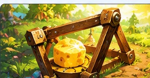
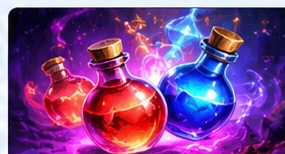
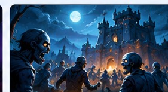

🧀 起司陷阱
每兩天一次每人只能參加早上或晚上其中一場。記得勾選「離線參與」，離線時也有機會參與成功；在線上的成員可以召集。
個人獎勵累積達 47.5M 即可拿滿，達標就可以停手，不要為了多打而持續損兵。
掌握活動時間・輕鬆規劃・一起變強！

每人只能參加早上或晚上其中一場。記得勾選「離線參與」，離線時也有機會參與成功；在線上的成員可以召集。
個人獎勵累積達 47.5M 即可拿滿，達標就可以停手，不要為了多打而持續損兵。

每週有兩場，請提前向立宮報名自己能參加的時間。記得準時上線參戰才有獎勵！主要玩法是佔領場內領地及與其他玩家戰鬥；若打不過對方，也可以直接去採集。活動場內的士兵損失不影響原有兵力，放心盡量參與。

共有 20 波屍鬼 攻打大家的教堂，活動前記得開啟城防，並召回所有採集隊伍。防守主要看第一隊戰力，目前三級屍鬼以第一隊 5.2M 即可守滿 20 波；有餘力的成員可派第 2、3、4 隊支援鄰居防守。
全公會一起攻打地圖上的屍鬼，累積打滿五波即可領取獎勵。這個活動不分誰打得多，不用搶傷害，看到屍鬼就幫忙打就好！大家一起打得越快，活動就能越早結束。
日期會依照電腦／手機的目前日期自動更新；點選日期可查看當天活動。
依照每日主題安排資源與加速道具；紅色重點是當日建議優先完成的方向。
★ 強烈建議：優先升級烏鴉等級
★ 強烈建議：把握當天大量升級建築
★ 強烈建議：把握當天大量升級科技
★ 強烈建議：集中升級英雄
★ 強烈建議：大量生產士兵
★ 強烈建議：積極參與戰鬥、爭取擊殺積分
星期日沒有公會對決活動
獎勵活動每 4 小時輪替一次；以下依伺服器每日 10:00 重置時間排列，獨立按週查看。